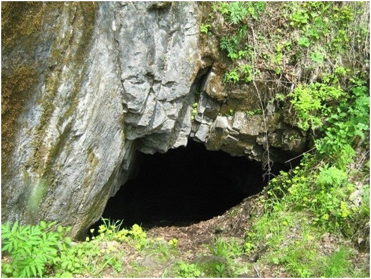

22. Лондоковская пещера
🌳 📌 Лондоковская пещера 🗻
представляет собой карстовое образование на известняковых отложениях на юго-западном склоне🌄 южных отрогов хребта Малый Хинган. Вход в пещеру 🗻 представлен карстовой воронкой, которая окружает пещеру.🌾
📌 Памятник природы образован здесь с целью сохранения уникального природного комплекса карстового образования. В окрестностях пещеры, в частности в границах карстовой воронки, образующей вход, произрастают редкие растения, занесенные в📕 Красную книгу России и ЕАО.
